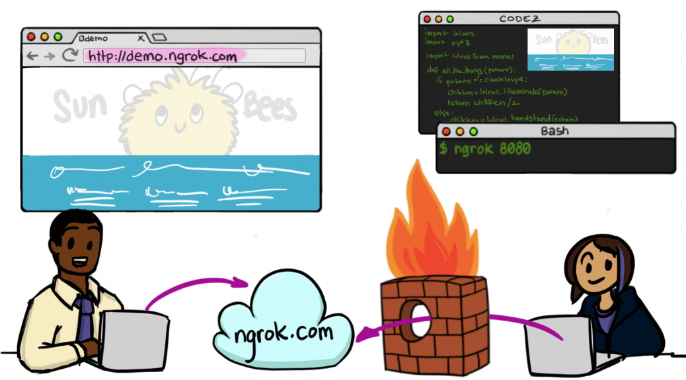
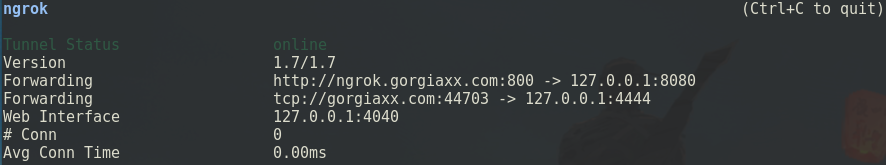

前言
为什么写这篇文章呢？因为之前复现CVE-2017-0199漏洞，需要NAT穿透。于是上网查了一下穿透服务，大多是基于ngrok的。使用过程中发现非常难配置，现版本1.7，据说有内存泄露的bug。最新版2.2已经闭源，官方文档已经失效，上网查了一下别人写的文章，顺便记录下自己使用的过程。据说FRP比ngrok更强，下次尝试一下。
安装
git clone https://github.com/inconshreveable/ngrok
cd ngrok
make
# 服务端
mv ./ngrokd /usr/bin/ngrokd
# 客户端
mv ./ngrok /usr/bin/ngrok
echo "" > $HOME/.ngrok
使用
Server
ngrokd大意是ngrok daemon，顾名思义是服务端。查看帮助
root@gorgiaxx:~/tmp/ngrok/bin# ./ngrokd --help
Usage of ./ngrokd:
-domain string
Domain where the tunnels are hosted (default "ngrok.com")
-httpAddr string
Public address for HTTP connections, empty string to disable (default ":80")
-httpsAddr string
Public address listening for HTTPS connections, emptry string to disable (default ":443")
-log string
Write log messages to this file. 'stdout' and 'none' have special meanings (default "stdout")
-log-level string
The level of messages to log. One of: DEBUG, INFO, WARNING, ERROR (default "DEBUG")
-tlsCrt string
Path to a TLS certificate file
-tlsKey string
Path to a TLS key file
-tunnelAddr string
Public address listening for ngrok client (default ":4443")
因为我服务器80和443端口被Nginx占用了，所以改成800和801，tlsCrt和tlsKey也不需要配置，因为用不到。log等级设为WARNING吧。tunnelAddr是我们内网机器访问服务器的隧道地址。
./ngrokd -domain gorgiaxx.me -httpAddr :800 -httpsAddr :801 -tunnelAddr :802 -log-level WARNING
Client
查看帮助
gorgias@3vil:~/Tools/port_map/ngrok/bin$ ./ngrok --help
Usage: ./ngrok [OPTIONS] <local port or address>
Options:
-authtoken string
Authentication token for identifying an ngrok.com account
-config string
Path to ngrok configuration file. (default: $HOME/.ngrok)
-hostname string
Request a custom hostname from the ngrok server. (HTTP only) (requires CNAME of your DNS)
-httpauth string
username:password HTTP basic auth creds protecting the public tunnel endpoint
-log string
Write log messages to this file. 'stdout' and 'none' have special meanings (default "none")
-log-level string
The level of messages to log. One of: DEBUG, INFO, WARNING, ERROR (default "DEBUG")
-proto string
The protocol of the traffic over the tunnel {'http', 'https', 'tcp'} (default: 'http+https') (default "http+https")
-subdomain string
Request a custom subdomain from the ngrok server. (HTTP only)
Examples:
ngrok 80
ngrok -subdomain=example 8080
ngrok -proto=tcp 22
ngrok -hostname="example.com" -httpauth="user:password" 10.0.0.1
Advanced usage: ngrok [OPTIONS] <command> [command args] [...]
Commands:
ngrok start [tunnel] [...] Start tunnels by name from config file
ngork start-all Start all tunnels defined in config file
ngrok list List tunnel names from config file
ngrok help Print help
ngrok version Print ngrok version
Examples:
ngrok start www api blog pubsub
ngrok -log=stdout -config=ngrok.yml start ssh
ngrok start-all
ngrok version
如果想更方便地配置，给更多人用，最好设为泛域名解析。也可以自己搭建一个解析服务器。 如果自己用，就指定子域名解析。
ngrok -hostname="ngrok.gorgoaxx.me" -subdomain=ngrok 802 -proto=tcp 80
咱不会每次都在参数处配置的，肯定是使用配置文件的，参考这段代码
ngrok/src/ngrok/client/config.go
type Configuration struct {
HttpProxy string `yaml:"http_proxy,omitempty"`
ServerAddr string `yaml:"server_addr,omitempty"`
InspectAddr string `yaml:"inspect_addr,omitempty"`
TrustHostRootCerts bool `yaml:"trust_host_root_certs,omitempty"`
AuthToken string `yaml:"auth_token,omitempty"`
Tunnels map[string]*TunnelConfiguration `yaml:"tunnels,omitempty"`
LogTo string `yaml:"-"`
Path string `yaml:"-"`
}
type TunnelConfiguration struct {
Subdomain string `yaml:"subdomain,omitempty"`
Hostname string `yaml:"hostname,omitempty"`
Protocols map[string]string `yaml:"proto,omitempty"`
HttpAuth string `yaml:"auth,omitempty"`
RemotePort uint16 `yaml:"remote_port,omitempty"`
}
如果使用ngrok start，那么默认读取home下的配置文件
$HOME/.ngrok
以用作metasploit为例。ngrok.gorgiaxx.me的子域名用来传输payload。 一般不用hostname，这是全名。某些特定情况会使用。如果你使用ngrok的服务器也能通过CNAME解析，然后手动设自己的域名。不过现在他们闭源，已经用不着了。
server_addr: gorgiaxx.me:802
trust_host_root_certs: false
tunnels:
dav:
proto:
http: 8080
subdomain: ngrok
rev:
proto:
tcp: 4444
然后开启连接
./ngrok -config ./ngrok.yml start dav rev
也可以一下开启全部
./ngrok -config ./ngrok.yml start-all

总结
可以发现开源版本的ngrok存在很多待改进的地方。使用体验来说不是很方便，隧道也没有用户认证，这样被别人发现了就直接能使用。不过还是个不错的工具。